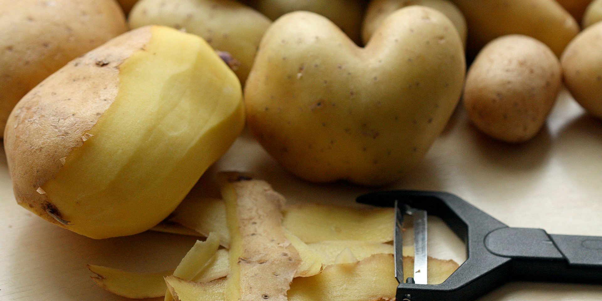

<!DOCTYPE html>
<html lang="en">
  <head>
    <meta charset="UTF-8">
    <title>Mashed Potatoes</title>
  </head>
</html>

<h1>Navigation</h1>
<a href="../index.html">All Recipes</a>

<h1>Mashed Potatoes</h1>



<h2>Overview</h2>
<p>My partner is obsessed with this because of TikTok. It is pulled from Gordan Ramsey's hex-clad steak video. About 16 potatoes feed 12 people.</p>

<ul><strong><u>Ingredients</u></strong>
    <li>2 large russet potatoes</li>
    <li>1 cup of milk or heavier cream</li>
    <li>3 tablespoons butter</li>
    <li>Spring of thyme</li>
    <li>Half head of garlic</li>
</ul>

<ol><strong><u>Instructions</u></strong>
    <li>Remove potatoes skin and dice into 2" cubes.</li>
    <li>Rinse potatoes, similar to rice, to remove starch.</li>
    <li>Add to pot with plenty of salt and cover with <strong>cold</strong> water.</li>
    <li>Bring to a boil and simmer for 15 minutes.</li>
    <li>At half way add milk, butter, thyme, and half a head of garlic to a pot.</li>
    <li>Gently simmer the mixture to infuse the milk.</li>
    <li>Drain and rinse under hot running water.</li>
    <li>Remove the small amount of water remaining by placing a lid on the pot and shaking for 30 seconds.</li>
    <li>Feed through a potato ricer.</li>
    <li>Make a mound in the pot so there is a well for the wet ingredients.</li>
    <li>Add half of the milk to the mound and incorporate.</li>
    <li>Add black pepper to taste.</li>
    <li>Add remaining milk until desired texture.</li>
    <li>Stir and serve.</li>
</ol>